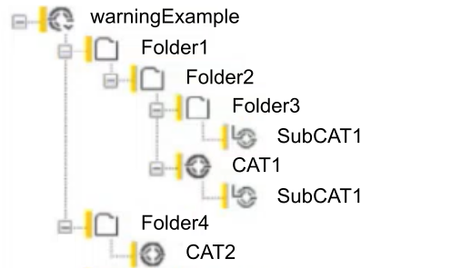

The amount of input parameter given to the ADD_ANY_DURATION function is not equal to 2
The function ADD has been called with a not standard number of input parameters. Indeed, when used for adding duration input parameters, the function ADD is standard when exactly two input parameters are given. This two duration input parameters standard is not mandatory as it is still possible to give one, three or more duration input parameters as the ADD function is extensible and doesn't create warning with other types than duration ones.
Example Case 1
FUNCTION TEST_WRN_ADD_PARAM_COUNT:TIME
VAR_INPUT
i1 : TIME;
END_VAR
TEST_WRN_ADD_PARAM_COUNT := ADD(i1);
END_ALGORITHM
Example Case 2
FUNCTION TEST_WRN_ADD_PARAM_COUNT:TIME
VAR_INPUT
i1 : TIME;
i2 : TIME;
i3 : TIME;
END_VAR
TEST_WRN_ADD_PARAM_COUNT := ADD(i1, i2, i3);
END_ALGORITHM
These examples will generate the following warnings while compiling:
In Algorithm 'TEST_WRN_ADD_PARAM_COUNT': Standard function ADD_ANY_DURATION requires exactly two parameters but 1 has/have been passed (WRN_ADD_PARAM_COUNT)
In Algorithm 'TEST_WRN_ADD_PARAM_COUNT': Standard function ADD_ANY_DURATION requires exactly two parameters but 3 has/have been passed (WRN_ADD_PARAM_COUNT)
The first function add only one TIME input parameter using the ADD function and return a TIME value. This action is causing the first warning as only one input parameter is given while the standard number expected is two. The value returned will then be equal to the input parameter value.
The second function add three TIME input parameters using the ADD function and return a TIME value. This action is causing the second warning as three input parameters are given while the standard number expected is two. The value returned will then be the some of the three input parameters value.
TIPS
Right click in the warning and select Show in Editor, this will show where the warning is located. Then check the input parameters of the ADD function to make sure no input parameters is not missing or extra. If the input parameters are fine then either add them without the function or split the ADD function into several ones.
Once done, save and build the solution to check that the warning is removed.
The array is partially initialized
Only a partial initialization has been done to the array, a value hasn’t been assigned to every elements of the array. Other values are expected to fully initialized the array.
As a multidimensional array may be considered as an array of arrays, this warning can notify a partial initialization on any dimension of the array. If a nested initializing syntax is used then the missing elements can be reported along every dimensions of the array.
Example Case 1
FUNCTION WRN_ARRAY_NOINIT_1
VAR_INPUT
in1 : ARRAY[4] OF DINT := [1, 2, 3];
END_VAR
END_ALGORITHM
Example Case 2
TYPE A1I : ARRAY[0..2] OF DINT;
END_TYPE
FUNCTION WRN_ARRAY_NOINIT_2
VAR_INPUT
in1 : ARRAY[4] OF main.A1I := [[1,2],[3,4],[5,6]];
END_VAR
END_ALGORITHM
These examples will generate the following warnings while compiling:
In Algorithm 'WRN_ARRAY_NOINIT_1': 4 bytes in array have not been initialized (WRN_ARRAY_NOINIT_1)
In Algorithm 'WRN_ARRAY_NOINIT_2': 4 bytes in array have not been initialized (WRN_ARRAY_NOINIT_2)
In Algorithm 'WRN_ARRAY_NOINIT_2': 4 bytes in array have not been initialized (WRN_ARRAY_NOINIT_2)
In Algorithm 'WRN_ARRAY_NOINIT_2': 4 bytes in array have not been initialized (WRN_ARRAY_NOINIT_2)
In Algorithm 'WRN_ARRAY_NOINIT_2': 12 bytes in array have not been initialized (WRN_ARRAY_NOINIT_2)
In the first function, the array in1 has been initialized with only three values while the array is composed of four elements.
In the second example, the array type A1I is created with three elements. Then in the function, a multidimensional array in1 is created. The array in1 has four elements of type A1I, thus in1 is composed of 4 time 3 elements. Here only three A1I arrays out of four has been initialized (leading to the last warning). In addition, each A1I array has been initialized with only two values out of three (leading to the three other warnings).
TIPS
Right click in the warning and select Show in Editor, this will show where the warning is located. Then either:
Remove all the initialized values, no warning is shown if no value is given during the initialization.
Add the values missing so each element get assigned one value.
Once done, save and build the solution to check that the warning is removed.
Too many values are assigned to the array
During the initialization of the array, more values has been assigned than there are elements in the array. Less values are expected to initialize the array.
As a multidimensional array may be considered as an array of arrays, this warning can notify an excessive initialization on any dimension of the array. If a nested initializing syntax is used then the excessive elements can be reported along every dimensions of the array.
Example Case 1
FUNCTION WRN_ARRAY_XINIT_1
VAR_INPUT
in1 : ARRAY[3] OF DINT := [1, 2, 3, 4];
END_VAR
END_ALGORITHM
Example Case 2
TYPE A1I : ARRAY[0..2] OF DINT;
END_TYPE
FUNCTION WRN_ARRAY_XINIT_2
VAR_INPUT
in1 : ARRAY[2] OF main.A1I := [3([1,2,3,4])];
END_VAR
END_ALGORITHM
These examples will generate the following warnings while compiling:
In Algorithm 'WRN_ARRAY_XINIT_1': 4 excessive bytes in array initializer (WRN_ARRAY_XINIT_1)
In Algorithm 'WRN_ARRAY_XINIT_2': 4 excessive bytes in array initializer (WRN_ARRAY_XINIT_2)
In Algorithm 'WRN_ARRAY_XINIT_2': 12 excessive bytes in array initializer (WRN_ARRAY_XINIT_2)
In the first function, the array in1 has been initialized with four values while the array is only composed of three elements.
In the second example, the array type A1I is created with three elements. Then in the function, a multidimensional array in1 is created. The array in1 has two elements of type A1I, thus in1 is composed of 2 time 3 elements. Here four elements are assigned inside the array A1I instead of three (leading to the first warning of this function). This over assigned array is initialized three time, instead of two as the array in1 is defined (leading to the last warning).
TIPS
Right click in the warning and select Show in Editor, this will show where the warning is located. Then either:
Remove all the initialized values, no warning is shown if no value is given during the initialization.
Remove the excessive values so each element get assigned only one value.
Once done, then save and build the solution to check that the warning is removed.
(${1},${2}) ${eCls} ${eSym}: Converting variable '${3}' of type '${4}' to type '${5}' during online change will loose array elements
The type of the variable named error message parameter ${3} has had its array size reduced during online change. All the excessive elements of the data type named in error message parameter ${4} compared to the data type named in parameter ${5} will be lost.
(${1},${2}) ${eCls} ${eSym}: Cannot convert variable '${3}' of type '${4}' to type '${5}' during online change
The type of the variable named detected error message parameter ${3} has been modified during online change. However, no conversion exists to convert the variables value of type ${4} to the variables new type ${5}. The variables current value therefore will be lost and the variable will be initialized to its default value.
Superfluous conversion from type [Source Type] to type [Target Type]
An explicit conversion operator has been used. The operator is redundant and can be omitted because:
[Source Type] (The operand’s type of the conversion operators) and the target type [Target Type] are the same.
[Source Type] is implicitly converted into the target type [Target Type].
This warning can be ignored, the conversion operator will be optimized away by the compiler and will not appear neither in intermediate nor in the end in native code.
Example Case
ALGORITHM TEST_WRN_CAST_NULL IN ST:
VAR_TEMP
In1 : BOOL;
In2 : BOOL;
END_VAR
In2 := TO_BOOL(In1);
END_ALGORITHM
This example will generate the following warning while compiling:
Warning WRN_CAST_NULL: In Algorithm 'TEST_WRN_CAST_NULL': Superflous conversion from type 'BOOL' to type 'BOOL'
This function should convert the variable In1 into boolean inside the variable In2 using the function TO_BOOL.
TIPS
Right click in the error and select Show in Editor, this will show where the error is located. Then remove the superfluous convertor operator.
(${1},${2}) ${eCls} ${eSym}: Conversion operator requires operand of type '${3}' but actual parameter is of type '${4}'
A fully typed conversion operator is made up of the word 'TO' preceded by the type of the source operand and followed by the type of the result value. So, LREAL_TO_STRING(value) will convert the source operand value of type LREAL to type STRING. A problem arises if the source operand is not of the type required by the conversion operator. According to standard conversion rules the source operand will be converted to the conversion operators required type if an implicit conversion rule exists or the call will not function. This warning handles the first of these two cases. The required type for the conversion operator is given in parameter ${3}, the actual parameters type is given in parameter ${4}. The compiler will add an additional conversion operator to make a parameter of a correct type. This implicit cast operator may be harmless, it may make the conversion process more complicated than necessary or it may even introduce unwanted side effects. Using the partly qualified form of conversion operators introduced with the third edition of the IEC 61131 standard simplifies the problem dramatically. The source type no longer needs to be specified and the conversion operator will adapt to the source operand automatically (e.g. TO_STRING(value)).
(${1},${2}) ${eCls} ${eSym}: The initializer string of length ${3} exceeds the variables maximum length of ${4}
This detected error indicates that the assignment of a string constant to an input variable of an instance of an IEC 61499 function block type may cause truncation. The warning may not be exact in all cases as some runtimes do not have a limitation of a string variables length. The detected error is similar to ERR_CONST_INIT and more information may be found there.
(${1},${2}) ${eCls} ${eSym}: The FOR loops upper bound of '${3}' may cause the control variable to overflow causing an endless loop
In the current implementation, a FOR loop will terminate once the control variable exceeds (for positive increments) or falls below (for negative increments) the termination value. If this value is outside the control variables defined range of values then the loop may not terminate. To resolve the detected error, either choose another type for the control variable or do a "value transformation". Example:
VAR i : USINT; END_VAR FOR i := 250 TO 255 DO ... (i) ... END_FOR;The loop can be transformed into:
FOR i := 249 TO 254 DO ... (i + 1) ... END_FOR;Or probably even better to:
FOR i := 0 TO 5 DO ... (i + 250) ... END_FOR;All of these transformations keep the value of variable i within its defined range all of the time.
(${1},${2}) ${eCls} ${eSym}: The associated statement list will not be executed for case expression value(s) '${3}'
In a case statement it is permitted to specify the same case label values multiple times with the effect that all case labels but the first ones are never reached and the statement list associated with those excessively defined case labels are never executed. The warning given is based on the idea that multiple case labels of the same value are not done on purpose but happen unintentionally and a programmer should be informed of what is happening. Parameter ${3} specifies a single value or a list of values which are specified in the case label list but will not be reached and their associated block will not be executed because of a previous match.
Duplicate name of application instances or folders in AVEVA model plant view
In one of the AVEVAmodel plant view from the Hierarchy View pad, at least two elements (application instances or folders) have the same name.
Thus, if the syncing of the application instances to AVEVA System Platform is performed, one of the two elements will not be created in the AVEVA System Platform.
Example Case

This will generate the following warning while compiling:
Duplicate area/objects in Hierarchy view will not be created in AVEVA System Platform (WRN_DUPL_NAME)
In this example, the AVEVAmodel plant view warningExample has two sub-CATs with the same name: SubCAT1. It is this duplicate that generates the warning during the compile.
TIPS
Right click in the warning and select Show in Editor, this will show where the warning is located. Then in the AVEVA model plant view causing the warning, select one of the elements and either:
Rename in the Solution Explorer pad if it is an application instance.
Once done, save and compile the solution to check that the warning is removed.
(${1},${2}) ${eCls} ${eSym}: ECC state '${3}' has no transition leading to some other state
If the IEC 61499 function block enters the state given in parameter ${3} then the function block stops working and will no longer respond to any incoming event. This can be useful in a few rare cases but if this condition has been overlooked the ECC should be changed.
(${1},${2}) ${eCls} ${eSym}: There are no actions associated with any ECC state
This function block has no action blocks attached to any of its states. An input event may trigger one or more ECC transitions each one modifying the function blocks state but the function block will be otherwise silent, no algorithms will be called, no internal variables will be changed and no output event will be fired. This may be useful in a few rare cases but chances are that something has been forgotten.
(${1},${2}) ${eCls} ${eSym}: Removing enumeration value '${4}' from type '${3}' may cause unpredictable results during online change
This detected error message is given if any enumeration value of an ordered set of enumeration values of an enumeration data type is removed during an online change operation. This may cause an unpredictable result if a variable still holds this value. As no association with the new enumeration value set exists the old value is kept unmodified and is interpreted in the context of the new value set.
(${1},${2}) ${eCls} ${eSym}: Possible loss of precision when converting from type '${3}' to type '${4}'
Generally a conversion from the data type named in error message parameter ${3} to data type ${4} requires an explicit conversion operator. When connecting function block outputs of type ${3} to function block inputs of type ${4} a ANY2ANY function block should be used to do this conversion explicitly. For reasons of backward compatibility disabling compiler option CheckConnectionsStrictly allows the connection to implicitly perform conversions which may end up with data loss. In this case a warning is printed to make the user aware of the fact that data loss at runtime may occur which cannot be handled by the application. It should also be taken into account, that these kind of conversions are easily overlooked by a casual user. Also to be consistent with conversion rules as defined in IEC 61131-3 3rd edition, Figure 11 it is strongly recommended to enable compiler option CheckConnectionsStrictly.
${1},${2} ${eCls} ${eSym} : ${3}
This is a general XML parser notification. A description of what went wrong can be found in parameter ${3}.
(${1},${2}) ${eCls} ${eSym}: Target profile forces compiler option '${3}' to '${4}' and cannot be overwritten
A compiler profile may specify a set of compiler options which must be used to meet the target systems requirements. Therefore, these compiler options cannot be overruled, neither by compiler command line options nor by pragmas trying to use certain options for a library element. Trying to do so will cause this warning to be given. However, in some cases, contradicting options should be rather treated as a detected error. If the compiler profile requires an interpreted ECC, a Basic function block requires compiled ECC with a standard behavior then these options are incompatible and the function block may compile but will not work correctly on the given system. The warning should be considered with care and not be taken lightly.
(${1},${2}) ${eCls} ${eSym}: Feature '${4}' is not supported (requires intermediate code version '${3}' or above) (ignored)
The feature described in parameter ${4} requires at least intermediate code version ${3}. With the current intermediate code version, the feature is simply ignored. ${4} may have any of the following values:
Compiled ECC: This warning is given if generation of compiled ECCs is requested by compiler options but 61499 runtimes requiring the current intermediate code version do not support a compiled ECC.
User managed process variables: the current intermediate code version does not provide runtime support for user managed process variables. The FB will compile but may not function properly.
(${1},${2}) ${eCls} ${eSym}: '${3}' is not a valid value of type '${4}' (${5})
This detected error indicates that the floating point literal in detected error message parameter '${3}' of type '${4}' cannot be correctly represented. The reason is given in detected error message parameter ${5}.
${1},${2} ${eCls} ${eSym} : Incremental update of type '${3}' in file '${4}' failed
This detected error message is given if parameter /incremental was given on the command line, the snapshot source GUIDs is not empty and not null but the symbol table was not loaded, because the file holding the type does not exist or the type was not found in the given file. The type in question is given in detected error message parameter ${3} and the file which has been given as argument to the incremental commandline parameter is given in ${4}.
(${1},${2}) ${eCls} ${eSym}: Type '${3}' has a size of '${5} bytes thus exceeding its configured size of '${4}' bytes
This detected error message is generally given during an online change operation when the structured type given in parameter ${3} exceeds the user requested size given in parameter ${4} which has been specified in pragma "FBMemIncrSize". The actual size is given in parameter ${4} for informational purposes. The warning may also be given during non-incremental compiler runs. In any case the pragma should be removed or the size given increased. If given during incremental compiler runs the warning indicates that reallocation of instance memory of all variables of this type is required. Reallocation may propagate if the containing type does not have enough instance memory preallocated to handle the reallocation of the member variable until a top-level 61499 FB type is reached.
(${1},${2}) ${eCls} ${eSym}: Identifier '${3}' looks like a keyword
This detected error is similar to detected error ERR_KEYWORD. For a description of keyword handling in the compiler use the documentation there.
(${1},${2}) ${eCls} ${eSym}: Keyword '${3}' is not supported (ignored)
The keyword named in parameter ${3} is syntactically recognized by the compiler but its semantics are not implemented and the keyword is therefore ignored as if it had not existed. Variables declared as constant using keyword 'CONST' will work correctly but updating the variable will not be prohibited by the compiler. Also, keyword 'RETAIN' is recognized but will not have any influence on the restart behavior of the variable within a function block.
0,0 (0,0) ${eCls} ${eSym}: Library path '${1}' does not exist
The name of the library shown in parameter ${1} has been passed on the command line to the function block type compiler but the associated file does not exist and the library has not been loaded. If the library is not required anyway the warning message can be ignored. However, it is recommended to remove the library from the compilers command line. If the library name has been misspelled follow up detected errors will occur complaining about missing type definitions. Name and path of the library need to be corrected. The warning is often overlooked because of the amount and obvious severity of follow up detected errors. It is strongly recommended to start evaluating detected error messages at the beginning and fix detected errors in the order they occurred (oldest ones first).
0,0 (0,0) ${eCls} ${eSym}: Library '${1}' did not load and is not used
This detected error is similar to detected error WRN_LIB_NOT_FOUND but in this case the library exists but cannot be accessed. The library file should be checked for suitable access rights. The library is not loaded and the consequences are the same as described for detected error WRN_LIB_NOT_FOUND.
(${1},${2}) ${eCls} ${eSym}: Conversion of '${3}' to '${4}' may lose precision
A REAL number has a precision of 7 to eight decimal digits. Taken as seconds a REAL number can therefore exactly represent a little more than half a year. Date and time values are internally represented as seconds since epoch (1970-1-1-0:0:0 UTC) and any generally used date and time value significantly exceeds the value range of a REAL. When the REAL value is converted back to a date and time value even the day in the resulting value compared to the exact result may have changed.
(${1},${2}) ${eCls} ${eSym}: A member variable named '${3}' does not exist in '${4}'
The structured type whose name is given in detected error message parameter ${4} does not contain a variable with a name given in detected error message parameter ${3}. Either the member variable name in ${3} is misspelled or an incorrect structure variable which happens to have a different type has been used or the type of this variable may not even specify a structured type. Because the type of the selector expression cannot be evaluated, follow up detected errors (like ERR_TYPE_MISMATCH with the first parameter given as '>unknown<') are to be expected. It is recommended to fix this detected error first and recompile before trying to fix the follow up detected errors.
(${1},${2}) ${eCls} ${eSym}: No negative sign allowed in unsigned integer values
A string size or an array element initialization multiplier must be an untyped, unscaled, unsigned integer possibly with interspersed underscore characters. A negative sign following a type prefix is simply ignored.
(${1},${2}) ${eCls} ${eSym}: semicolon missing after type declaration
There are some IEC 61131 dialects out there which allow not to write semicolons before a keyword. These dialects try to give a more PASCAL-like look and feel. This extended syntax is accepted in a few cases to be able to accept these dialects but emit a warning message to inform that the code ought to be changed to comply with standard structured text.
(${1},${2}) ${eCls} ${eSym}: Event '${3}' of type '${4}' does not exist in '${5}'
An event named in parameter ${3} whose type is given in parameter ${4} does not in the IEC 61499 function block or adapter named in parameter ${5}. Parameter ${4} may have a value of 'EVENT_INPUT' or 'EVENT_OUTPUT'. Verify that the named event is of the correct type according to the current context (e.g. do not specify input variables in an action block).
Type [Undefined Type] is undefined
Reason for this detected error is basically the same as ERR_NO_SUCH_TYPE but is given only in cases when a missing type limits the compilers diagnostic capabilities but does not effect the overall functionality of the library element being compiled.
The warning is given specifically if a composite is compiled but function block instances within the composites function block network are of unknown type. From the runtimes point of view these function blocks are not part of the composite but objects of their own and instantiated independently of the containing composite. However, if the type of one port of a function block from a function block network is unknown, then the compiler is unable to do type checking nor connection checking.
The event is generally caused by an incomplete library which does define the missing function block. Because an unchecked connection may introduce unexpected runtime detected errors the libraries in question should be fixed and the missing function blocks defined. It is recommended to enable compiler option CheckConnectionsStrictly which makes this warning into the detected error ERR_NO_SUCH_TYPE and make a successful compilation impossible.
TIPS
If this warning is appearing in your solution and needs to be removed then please contact Schneider Electric support for further help.
The name given to the function may lead to compatibility issue
The data type chosen to overload the standard function exists in two formats, long and short, e.g. DATE_AND_TIME and DT. As these two formats exist, standard functions can then be overloaded by calling them with both formats, e.g. ADD_DATE_AND_TIME_TIME and ADD_DT_TIME.
However, even though overloading a standard function by calling it with both formats is available, doing it with short format may improve compatibility of the function. It is then recommended to use the small format of the type variable while overloading standard functions.
Example Case 1
FUNCTION TEST_WRN_NONSTD_TYPED_FCT:DT
VAR_INPUT
i1 : DT;
i2 : TIME;
END_VAR
TEST_WRN_NONSTD_TYPED_FCT := ADD_DATE_AND_TIME_TIME(i1, i2);
END_ALGORITHM
Example Case 2
FUNCTION TEST_WRN_NONSTD_TYPED_FCT:TOD
VAR_INPUT
i1 : TOD;
i2 : TIME;
END_VAR
TEST_WRN_NONSTD_TYPED_FCT := SUB_TIME_OF_DAY_TIME(i1, i2);
END_ALGORITHM
These examples will generate the following warnings while compiling:
In Algorithm 'TEST_WRN_NONSTD_TYPED_FCT': Function 'ADD_DATE_AND_TIME_TIME' uses non standard typing, use 'ADD_DT_TIME' instead (WRN_NONSTD_TYPED_FCT)
In Algorithm 'TEST_WRN_NONSTD_TYPED_FCT': Function 'SUB_TIME_OF_DAY_TIME' uses non standard typing, use 'SUB_TOD_TIME' instead (WRN_NONSTD_TYPED_FCT)
The first function add one DT and one TIME input parameters using the standard function ADD. This function is overloaded and request as input the data types DATE_AND_TIME and TIME. Eventually, the function returns a DT value. This action is causing the first warning as the ADD function is called with the long format of the data type DT. The name that should have been used instead is ADD_DT_TIME.
The second function subtract one TOD with one TIME input parameters using the SUB. This function is overloaded and request as input the data types TIME_OF_DAY and TIME. Eventually, the function returns a TOD value. This action is causing the second warning as the SUB function is called with the long format of the data type TOD. The name that should have been used instead is SUB_TOD_TIME.
TIPS
Right click in the warning and select Show in Editor, this will show where the warning is located. Then change the name of the function from the current one to the one given in the warning or in the Time Functions chapter. Once done, then save and build the solution to check that the warning is removed.
(${1},${2}) ${eCls} ${eSym}: '${3}' is some numeric type and '${4}' could be a hexadecimal literal (is a 16# prefix missing?)
This warning accompanies detected error ERR_NOT_ENUMVALUE and is given if ${3} specifies some integral type (ANY_INT or ANY_BIT) and ${4} has the syntax of a hexadecimal number starting with a letter. In this case there is a chance that the user simply forgot to precede the hexadecimal number with base 16 qualifier (16#).
(${1},${2}) ${eCls} ${eSym}: NOT operation on untyped integer value ${3}, assuming 64-bit word size (LWORD)
This detected error indicates that a NOT operator heavily depends on the size of its bit string operand. For compatibility reasons the compiler will assume all integer constants passed to a NOT operator to be 64 bits in size thus converting all leading zeros to ones. This often leads to additional detected error messages complaining that the resulting type will not fit into the target variable. To resolve the detected error, the integer operand constant should be typed or if the NOT operator has the form of a function call then the NOT operator may be typed too.
(${1},${2}) ${eCls} ${eSym}: Online change of dynamic strings is not supported
Changing a variable type to a dynamic string is not supported because ST does not support dynamically allocated string therefore no conversion code can be generated. The variables value will be lost.
${1},${2} ${eCls} ${eSym}: Target profile forces compiler feature '${3}' to '${4}' and cannot be overwritten
Features defined in a target profile cannot be changed neither by command line parameters nor by embedded library element pragmas. A target profile reflects the absolute requirements of a particular hardware and all changes to these requirements would certainly make the code unusable and the compiler output will not run on this hardware. All request to change features defined in a target profile are simply ignored. The warning, however, should be taken seriously because the behavior of the library element in question may implicitly change. If a target platform requires interpreted ECC for example but a function block needs to be compiled for compiled ECC then the FB may still compile correctly but may not run if the function block implicitly takes advantage of features available in FBs with a compiled ECC only. This may need some careful examinations. In any case it is recommended to avoid contradicting feature requests. An option can be to switch to another target profile or to change compiler options. If a pragma attached to a library element causes the warning message, consider removing the pragma or avoid using that library element by picking some other one.
(${1},${2}) ${eCls} ${eSym}: In function ${3} parameter '${4}' is ${5} but should be within [${6}..${7}]
This detected error is given if the formal parameter named in ${4} of standard function ${3} is out of range. The actual value of the parameter can be found in ${5}, the smallest valid value in ${6} and the largest valid value in ${7} (all limits are inclusive). This detected error generally occurs during constant folding and is semantically equivalent to runtime detected error ERR_RT_PAR_RANGE. The results during constant folding are the same as during runtime which means that the value of parameter ${3} is adjusted to the nearest range limit given in parameter ${6} or ${7} and compilation continues.
(${1},${2}) ${eCls} ${eSym}: Cannot figure out a return value type for standard function '${3}(${4})' - assuming DINT
For the standard function named in parameter ${3} and the parameters given in parameter ${4} the compiler was unable to figure out a suitable return value for the function call in question. There are two possible reasons for this detected error to occur:
The function given in parameter ${3} is the untyped version of TRUNC. The function is expected to convert some REAL value to some integer value but only by inspecting the parameter the compiler is, by definition, unable to figure out a suitable return value. To resolve the detected error, a typed version of function TRUNC (e.g. TRUNC_SINT) should be used.
The standard does not specify a minimum number of parameters for extensible functions. So, if none are passed the compiler is also unable to figure out a return type for such a function (e.g. ADD()). A reasonable solution to resolve the detected error is to avoid obviously meaningless constructs in ST source code.
(${1},${2}) ${eCls} ${eSym}: Range checking of long integers is not supported (requires intermediate code version '${3}' or above)
This warning is emitted when compiler feature CheckValueRange is enabled, intermediate code version 3.04 or earlier is required and an integer value is assigned to a subrange variable whose type is based on long integers (LINT or ULINT). The assignment is done without range checking because range checking library code for long integers has been introduced with intermediate code version 3.05 (the intermediate code version number should be also given in parameter ${3}).
(${1},${2}) ${eCls} ${eSym}: Rotate count is ${3} but should be between [0.. ${4}) and is therefore changed to ${5}
This detected error indicates that the rotate count should be greater than or equal to zero but less than the number of bits in the bit string operand. The detected error may be ignored, the rotate count is taken modulo the number of bits in the bit string operand.
(${1},${2}) ${eCls} ${eSym}: Shift count of zero results in a no operation
This detected error indicates that a shift or rotate operation with a count of constant zero is effectively a no operation. The notification can be ignored, the compiler will silently remove the operator. This works for a constant shift count only.
(${1},${2}) ${eCls} ${eSym}: shift or rotate on untyped integer value ${3}, assuming 32-bit word size (DWORD)
This detected error indicates that shift and even more rotate operations heavily depend on the size of their bit string operand. An untyped integer constant, however, does not have an implicit size. Most people tend to assume an integer constant to be 32 bits in size unless the constant does not fit. Therefore, the compiler makes every constant into a DWORD or into an LWORD if required. To resolve the detected error and improve readability either the bit string operand or the shift operator should be typed.
(${1},${2}) ${eCls} ${eSym}: The shift operation always evaluates to zero
This detected error indicates that a shift count greater than the number of bits in the bit string operand will always reset the operand to zero no matter what the actual value of the original operand was. Verify that the requested operation fulfills the required function. This works for a constant shift count only.
(${1},${2}) ${eCls} ${eSym}: String expression may exceed the maximum of ${3} characters possibly causing truncation
This warning is also given if a compiler allocated temporary string buffer exceeds the maximum allowed size for character strings (currently 65535 characters). The buffer will then be shortened to the maximum allowable length and truncation may occur.
Assigning a longer string to a shorter string may cause truncation
Assigning a STRING A with a maximum size X to a STRING B with a maximum size Y, with X > Y, may lead to a lost of information during runtime. When executed, if:
STRING A hold a number of character lower or equal than Y, no lost will occur.
STRING A hold a number of character higher than Y, all character after the Yth one will be truncated.
In both case, a warning message occurs to inform about the potential truncation.
Example Case
FUNCTION TEST_WRN_STRING_TRUNC
VAR_INPUT
length10 : STRING[10];
length5 : STRING[5];
END_VAR
length10 := '12345'
length5 := length10;
length10 := CONCAT(length5, '123456');
END_ALGORITHM
This will generate the following warnings while compiling:
In Algorithm 'TEST_WRN_STRING_TRUNC': Assigning a string value with a maximum size of 10 to one of size 5 may cause truncation during runtime (WRN_STRING_TRUNC)
In Algorithm 'TEST_WRN_STRING_TRUNC': Assigning a string value with a maximum size of 11 to one of size 10 may cause truncation during runtime (WRN_STRING_TRUNC)
This function first assigns a STRING with 5 character to length10.
Secondly length10 is assigned to length5. This action is causing the first warning because the maximum size of length10 is higher than the maximum one of length5. Assigning length10 to length5 may lead to truncation, even though in this case length10 holds only a 5 characters long, thus no information will be lost.
Finally, a concatenation of length5 with the STRING ‘123456’ will be assigned to length10. This action is causing the second warning because the size of the STRING concatenated is higher than the maximum size of length10. In this situation, the final character of the STRING ‘123456’ will be truncated during the concatenation.
TIPS
Right click in the warning and select Show in Editor, this will show where the warning is located. Then either change the maximum size of the different STRING to make sure nothing may get truncated or if it not possible then split the STRING into several ones to make sure there is no potential lost of information. Once done, save and build the solution to check that the warning is removed.
(${1},${2}) ${eCls} ${eSym}: Compatibility warning: event variables must be ANDed to the guard condition
The syntax for a complete transition condition is defined as an event name followed by a guard condition which is enclosed in brackets. For compatibility reasons the old syntax from the first edition of the standard is also accepted which delimits the event name from the guard condition by an AND operator. The event name as well as the guard condition but not both are optional. If the old syntax is used then it is hard to make a difference which part of the expression is the event name and what makes up the guard condition. One could have the impression that a transition condition is nothing but a boolean expression but by definition it is not but follows certain rules. To bypass these rules and to suppress this detected error message enable compiler option NonStdGuardExpr.
(${1},${2}) ${eCls} ${eSym}: Compatibility warning: event variables are not allowed in a guard condition. A transition condition is always made up of an event name followed by a guard condition. Any of the two but not both components are optional. Two different flavors of syntax exist but in neither case the guard condition cannot contain an event name. To loosen this restriction and to suppress this detected error message enable compiler option NonStdGuardExpr.
(${1},${2}) ${eCls} ${eSym}: Type specifier '${3}' is not allowed in unsigned integer constants
A string size or an array element initialization multiplier must be an untyped, unscaled, unsigned integer possibly with interspersed underscore characters. A type prefix is simply ignored.
(${1},${2}) ${eCls} ${eSym}: Type '${3}' is not explicitly sized
This detected error is given for the string type given in error message parameter ${3} which does not have its size explicitly defined. By default, a size of 15 is chosen. This default behavior, however, may change in a future intermediate code version. Every not explicitly sized string type will be made into a dynamically allocated string of some suitable size which will not be limited to a maximum length of 15. It is recommended to specify an explicit size (of 15) to ensure compatibility with intermediate code versions to come.
(${1},${2}) ${eCls} ${eSym}: Local variable '${4}' hides variable '${3}.${4}'
A local variable named ${4} has been declared but in an IEC 61499 function block or an IEC 61131 program or function block a variable of the same name exists. In standard IEC 61131 the instance variable will not be accessible and the local variable will always be used. Using IEC 61131 third edition syntax using the notation THIS.${4} may work.
(${1},${2}) ${eCls} ${eSym}: Variable '${3}' may suffer truncation during online change when its type is converted from '${4}' to '${5}'
This detected error message is given during an online change operation if the value range of the variables type whose name id given in detected error message parameter ${3} has been reduced. This may happen if either an explicit cast is required to convert the old type whose name is given in detected error message parameter ${4} into the new type whose name is given in parameter ${5} or if the variable is of a subrange type which has its defined value range reduced (in this case both types are of the same name) or if an integer type has been changed to a subrange type. If the new type is a subrange type and the compilers range checking option is enabled then code will be generated which generates a runtime detected error message if the current value of that variable is not within the range of the new type.
${1},${2} ${eCls} ${eSym} : Empty action ignored
The current function block contains an action block which does not specify an algorithm to call nor an output event to fire. Syntactically this block is actually a detected error. Functionally this action block is a no operation and could be simply removed. The compiler issues a warning to point out the syntax inconsistency which does not cause much harm but should be fixed by the programmer to improve portability.
${1},${2} ${eCls} ${eSym} : Variable '${3}' is not mapped to any output event
The variable named in parameter ${3} is not mapped to any output event indicating that the content of the variable will never get copied into another function block. Unmapped output variables are therefor rather useless although not strictly forbidden.